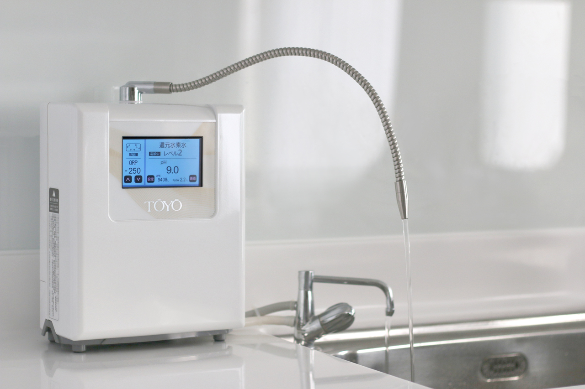
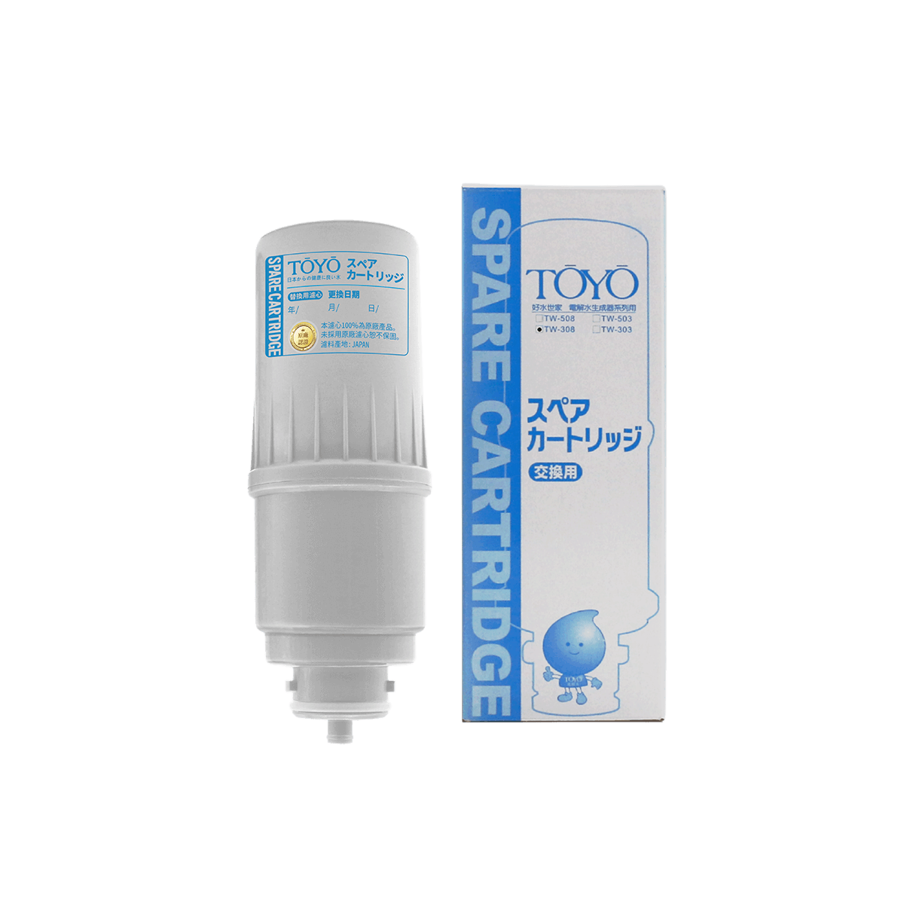
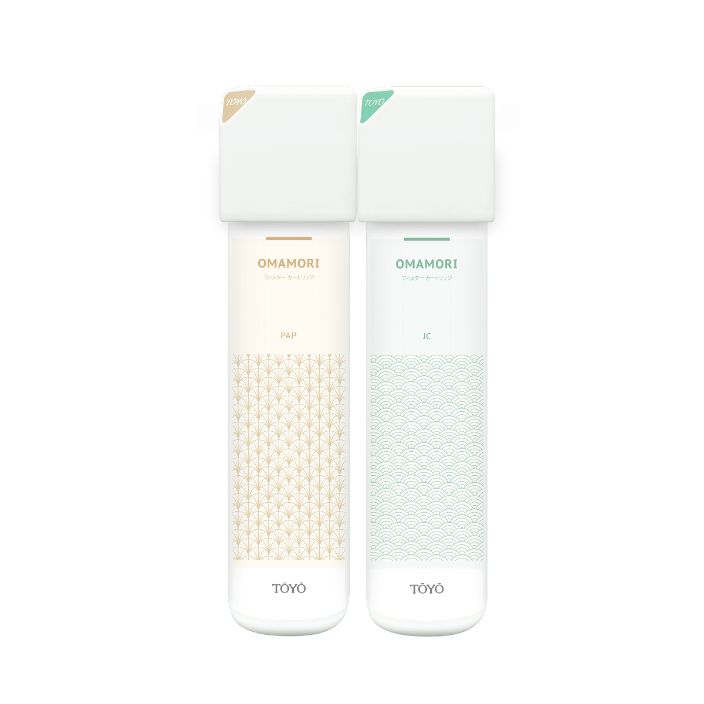

.jpeg)
- 


桌上型還元水素水生成器 TW-H1
桌上型還元水素水生成器現代家庭最佳保健飲用水


商品描述
【台灣設計】外型簡約、直覺式操作大介面。
【日本技術】電解槽大、品質穩定，可連續電解出水 30 分鐘。
【飲用鹼性離子水(水素)水 5 大好處】
富含負電位水素(氫)分子排除體內自由基。
鹼性水質幫助調整體質。
小分子團水易吸收。
礦物質離子化好吸收。
潔淨不含氯氣/細菌/雜質/重金屬。
【可生成多段pH酸鹼值電解水素水】
鹼性水 pH8.0 ~ 9.5 日常保健飲用。
酸性水 pH6.0 ~ 6.5 洗顏美容收斂。
中性水服藥 pH7.0、幼兒泡牛奶。
鹼性水 pH10.0 (無刺激性) 清洗蔬果去農藥殘留
【保養及維護】
建議使用 3 年以上，需回原廠進行保養維護，將清洗電解槽、更換管線零配件。未使用靜置 2 周以上，使用前請先手動逆洗 30 秒 - 60 秒，並排放水 10 - 15 分鐘，若仍有狀況需回原廠進行保養維護，靜置一個月以上可另行預約客服 0800-090-881 到府酸洗及管線檢查。
商品內容
鹼性離子水生成器主機、本體濾心1顆、無鉛酸性龍頭、壁面固定零件組、進出水軟管、商品說明書、酸性水龍頭 (LF 無鉛國家認證)、pH檢測液、一年保證書。
商品規格
| 型號 | 桌上型還元水素水生成器 TW-H1 |
| 電源 | AC 110~120 |
| 消耗電力 | 150W |
| 尺寸 | W 24CM D 14CM H 29CM |
| 重量 | 未入水時約4,5KG |
| 電解方式 | 水道水過濾供給連續生成 |
| 電解能力切換 | 還元水素水12段/中性1段/酸性6段 |
| 連續使用電解時間 | 常溫時連續通水30分鐘 |
| 電解生成量 | 3～5Ｌ/分(視原水水壓而定) |
| 電極洗淨 | 30秒～1分鐘(自動洗淨) |
| 適合水壓 | 0.5KG~3.5KG |
| 適合水源 | 自來水 |
| 使用最高溫度 | 40°C |
| 工作溫度 | 整機電解30分鐘內部溫度約50°C左右(主機板散熱處溫度約70°C左右) |
| 面板規格 | 4.3寸TFT-LCD |
| 面板壽命 | 正常使用下20,000小時 |
| 面板適用常溫 | 環境溫度建議40度以下 |
| 面板適用電壓 | DC12V |
| 面板耗電量 | 0.64W |
| 保護裝置 | 二段保險絲過熱過載 |
安裝實例


週邊配件/耗材

TW-H1主體濾心 TA-1100

OMAMORI - 2S

OMAMORI - 2P